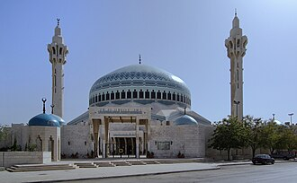

تعارف
مسجد الملك عبد الله الأول هو مسجد ومركز ثقافي، من معالم العاصمة الأردنية عمان. يتميّز بقبابه الزرقاء وموقعه في منطقة العبدلي القريبة من وسط البلد. تجاوره العديد من المساجد والكنائس الكبيرة في المدينة. يتسع المسجد لـ 3000 مصلٍ، وسمي على اسم الملك عبد الله الأول بن الحسين.
The King Abdullah I Mosque is a mosque, located in Amman, Jordan. Named in honour of Abdullah I, the mosque was built between 1982 and 1989 and is capped by a blue mosaic dome beneath which 3,000 Muslims may offer prayer. It is in the Abdali area of the city.
Kral I. Abdullah Camii, Ürdün'ün başkenti Amman'da bulunan bir camidir. Cami 1982-1989 yılları arasında inşa edilmiş olup 3,000 kişinin dua edebileceği mavi mozaik bir kubbe ile kaplıdır. Adını Ürdün Kralı I. Abdullah'tan almaktadır.
Masjid Raja Abdullah I di Amman, Yordania dibangun antara 1982 dan 1989. Masjid ini dihiasi dengan kubah mozaik biru yang megah di mana 3.000 umat Muslim dapat melakukan ibadah di sana.
شاہ عبداللہ اول مسجد اردان کے دار الحکومت عمان میں واقو ایک مسجد ہے جو کی تعمیر 1982ء اور 1989ء کے دوران ہوئی۔
Die König-Abdullah-Moschee ist eine bedeutende Moschee in Amman, Jordanien.
La mezquita del Rey Abdalá I es una mezquita en Amán la capital de Jordania. Toma el nombre del rey jordano Abdalá I y fue construida entre 1982 y 1989, convirtiéndose en uno de los símbolos de la ciudad.
La moschea del re Abdullah I ad Amman, in Giordania, fu costruita tra il 1982 e il 1989. È coronata da una magnifica cupola di mosaico blu sotto la quale 3.000 musulmani possono offrire la preghiera.
राजा अब्दुल्ला प्रथम मस्जिद जॉर्डन के अम्मान शहर में स्थित एक मस्जिद है। यह शहर के अब्दाली क्षेत्र में स्थित है। इसका नाम देश के पहले राजा अब्दुल्ला प्रथम के नाम पर रखा गया है। मस्जिद का निर्माण 1982 और 1989 के बीच हुआ था, इसके पास एक नीला मोज़ेक गुम्बद है।
Moscheea regelui Abdullah I este o moschee situată în Amman, Iordania și a fost construită între 1982 și 1989. Este acoperită de o magnifică cupolă de mozaic albastru sub care se pot ruga 3.000 de musulmani.
نقشے پر
دستاویزات اور لنکس
- Wikipédia — العربية
- Wikipédia — English
- Wikipédia — Türkçe
- Wikipédia — Bahasa Indonesia
- Wikipédia — اردو
- Wikipédia — Deutsch
- Wikipédia — Español
- Wikipédia — Italiano
- Wikipédia — Nederlands
- Wikipédia — हिन्दी
- Wikipédia — Română
- Wikidata — Q1574587
ڈیٹا: Wikidata (CC0)، ہر 3 ماہ بعد تازہ کیا جاتا ہے۔ سال عمارت کی معلوم قدیم ترین تاریخِ تعمیر ہے: جو عمارت بعد میں مسجد بنی (جیسے آیا صوفیہ)، اس کے لیے اصل عمارت کا سال دیا گیا ہے۔ تصاویر: Wikimedia Commons، ہر تصویر کے صفحے پر مصنف اور لائسنس۔